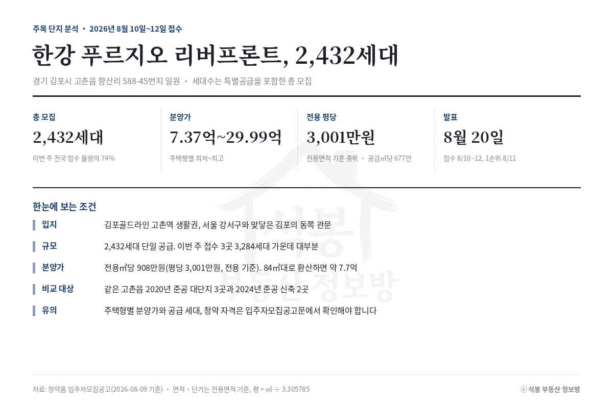
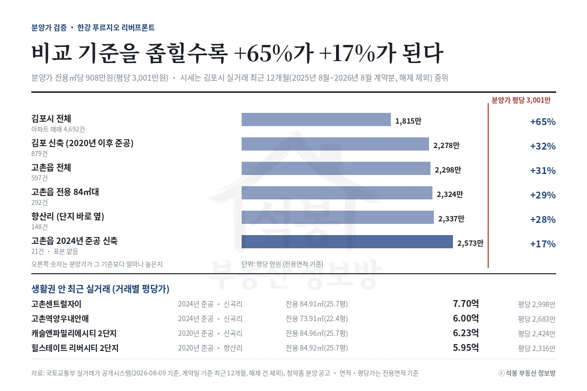
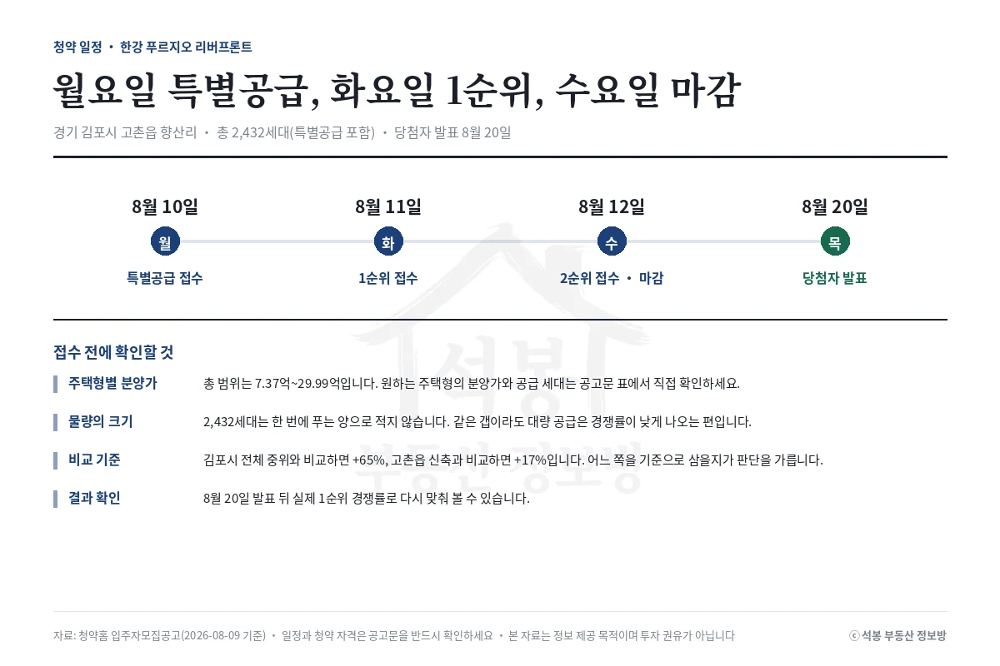

한강 푸르지오 리버프론트가 8월 10일 특별공급을 시작합니다. 김포시 전체 시세(최근 12개월 실거래 중위)와 비교하면 분양가가 +65%, 같은 고촌읍 신축과 비교하면 +17%입니다. 같은 분양가를 두고 답이 이렇게 갈립니다.
어떤 단지인가

구분
내용
위치
경기 김포시 고촌읍 향산리 588-45 일원
총 모집
2,432세대 (특별공급 포함)
분양가
7.37억~29.99억 (주택형별 최저~최고)
전용 평당
3,001만원 (전용면적 기준 중위, 공급㎡당 677만원)
일정
특별공급 8/10, 1순위 8/11, 마감 8/12, 발표 8/20
고촌읍은 김포골드라인 고촌역을 끼고 서울 강서구와 맞닿은 김포의 동쪽 관문입니다. 이번 주 전국에서 접수를 받는 3,284세대 가운데 이 단지 하나가 2,432세대입니다. 한 번에 푸는 물량이 이 정도면 경쟁률은 대체로 낮게 잡힙니다.
여기서부터는 회원에게 보여드립니다
카카오 로그인 3초면 전문을 읽을 수 있습니다. 무료입니다.
가입하시면 지역 시장조사 보고서(약식)를 2회 무료로 요청하실 수 있습니다.
이미 회원이면 같은 버튼으로 로그인만 됩니다
분양가 검증: 기준을 좁힐수록 +65%가 +17%가 된다

비교 기준
표본
평당(전용)
분양가 대비
김포시 전체
4,692건
1,815만원
+65%
김포 신축(2020년 이후 준공)
879건
2,278만원
+32%
고촌읍 전체
597건
2,298만원
+31%
고촌읍 전용 84㎡대
292건
2,324만원
+29%
향산리(단지 바로 옆)
148건
2,337만원
+28%
고촌읍 2024년 준공 신축
21건
2,573만원
+17%
김포시 전체 중위에는 양촌읍과 통진읍의 오래된 아파트가 함께 들어옵니다. 새 아파트 분양가를 그 값에 대면 +65%가 나오는데, 이 숫자로 비싸다고 말하는 건 무리입니다. 고촌읍만 떼어 내면 +31%, 크기를 전용 84㎡대로 맞추면 +29%, 단지 옆 향산리로 좁히면 +28%까지 내려옵니다.
가장 공정한 비교는 마지막 줄입니다. 연식까지 맞춘 2024년 준공 신축과 견주면 +17%입니다. 다만 그 줄의 표본은 21건뿐이라 값 하나가 흔들면 결과도 흔들립니다. 숫자를 그대로 믿기보다 방향만 읽는 편이 안전합니다.
전용㎡당 분양가 중위를 84㎡대에 그대로 적용하면 대략 7.7억이 나옵니다. 고촌센트럴자이가 7월에 거래된 값과 거의 같습니다. 2020년에 입주한 대단지들과 견주면 1.5억에서 1.8억쯤 위에 있습니다. 5~6년 먼저 지어진 아파트와의 차이를 새 아파트 값으로 볼지, 부담으로 볼지는 각자의 판단입니다.
고촌읍 아파트값은 2017년 준공 단지부터 이미 평당 2,700만원대에 올라 있습니다. 구축과 신축의 간격이 이만큼 벌어진 동네라, 무엇과 견주느냐가 그대로 결론이 됩니다.
정리

비교 기준에 따라 +65%도 되고 +17%도 되는 분양가입니다. 2,432세대라는 물량은 경쟁률을 끌어내리는 쪽으로 작용하고, 서울과 붙어 있는 위치는 반대로 작용합니다. 주택형별 분양가와 공급 세대, 청약 자격은 입주자모집공고문에서 직접 확인하셔야 합니다. 결과는 8월 20일 발표 뒤 실제 1순위 경쟁률(1순위 접수 건수 ÷ 일반공급 세대수)로 다시 맞춰 보겠습니다.
원자료: 청약홈 입주자모집공고(2026년 8월 9일 기준), 국토교통부 실거래가 공개시스템(김포시 아파트 매매, 계약일 기준 2025년 8월~2026년 8월, 해제 건 제외, 2026년 8월 9일 기준) · 면적·평당가는 모두 전용면적 기준, 평 = ㎡ ÷ 3.305785 · 분석·제작: 석봉 부동산 정보방 · 본 자료는 정보 제공 목적이며 투자 권유가 아닙니다. 분양가와 청약 자격은 입주자모집공고문을 반드시 확인하세요.